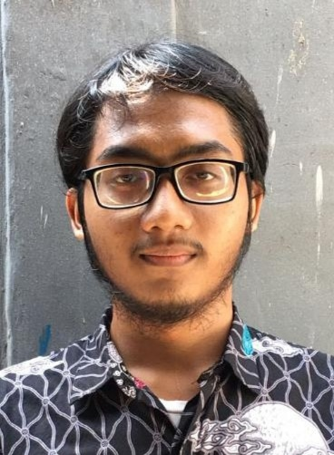

|

|
| KONTAK |
Telp
+62 812-8517-1586 |
Email
muha21095ti@student.nurulfikri.ac.id |
| PROFIL |
Nama
Muhammad Amar Dafi |
Tempat, Tanggal Lahir
Depok, 16 Maret 2002 |
Agama
Islam |
Kewarganegaraan
Indonesia |
Alamat
Jalan Kembang Lio No. 1,
RT 007 RW 013, Kelurahan Depok,
Kecamatan Pancoran Mas,
Kota Depok, Jawa Barat.
|
|
| PENDIDIKAN FORMAL |
| 2009 - 2014 |
SDN Pancoran Mas 1 Depok |
| 2017 |
PKBM Mitra Riau Jaya Cemerlang |
| 2017 - 2020 |
SMK Kesuma Bangsa 2 Depok
[Jurusan - Rekayasa Perangkat Lunak]
|
| 2021 - Sekarang |
STT Nurul Fikri
[Jurusan - Teknik Informatika]
|
| PENGALAMAN BERORGANISASI |
| 2017 - 2020 |
ROHIS SMK Kesuma Bangsa 2 |
| 2017 - 2020 |
English Club SMK Kesuma Bangsa 2 |
| 2018 - 2019 |
Multimedia SMK Kesuma Bangsa 2
|
| 2019 - 2020 |
RPL SMK Kesuma Bangsa 2
|
| KETERAMPILAN |
- Membaca, Menulis, dan Berbicara Bahasa Indonesia
- Mengoperasikan Telepon Pintar
- Mengoperasikan Komputer
- Mengoperasikan Perangkat Lunak Perkantoran
|
| PENGALAMAN LAIN |
|
|
| HOBI |
|
|
|